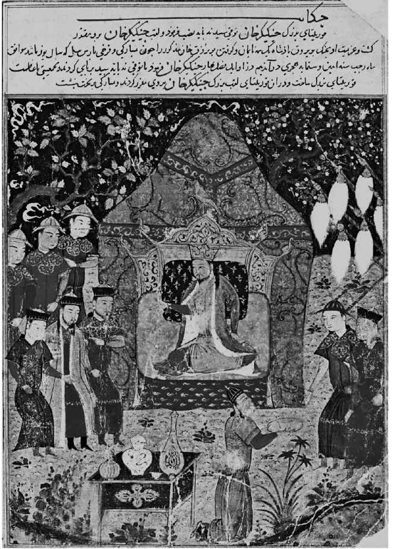

汗位空缺两年后，成吉思汗的儿子窝阔台继位为大汗。在位期间（1229—1241年），他继续对欧亚大陆两端约相距5000英里的中国和欧洲征战。在中国，1234年蒙古人歼灭了北方金朝的残兵，随即进攻南宋。宋兵顽强抵抗，战争持续了45年，最终南宋亡国。与此同时，成吉思汗的孙子拔都奉命率兵15万人向西进攻欧洲。1237年秋，他越过伏尔加河中游，进攻俄罗斯中部各公国，占领了一个又一个城镇，其中包括当时不太重要的城市莫斯科。到1238年3月，拔都已逼近波罗的海沿岸城市诺夫哥罗德，但他担心春雪可能将骑兵困在泥泞中，因而突然撤兵南下。
两年以后，1240年夏，蒙古人从高加索基地再次进攻俄罗斯南部，到12月，占领了俄罗斯古都基辅。蒙古人对当地居民极为残暴，当时一位僧侣记载说，幸存者寥寥无几，他们“非常羡慕死者”。第二年，蒙古人继续西侵，进入波兰和匈牙利，在西里西亚的利格尼兹，大败德意志军3万人；然后，穿过冰封的多瑙河，占领萨格勒布，最后到达亚得里亚海岸。至此，蒙古军队控制了从亚得里亚海到日本海的欧亚大陆广大地区。1242年春，蒙古传来窝阔台大汗去世的消息，于是，拔都穿过巴尔干地区，撤回伏尔加河下游，在此建立汗国；因其帐殿金色，故名为金帐汗国。

图83 13世纪波斯人所著的蒙古历史书中的插图：成吉思汗的朝廷。成吉思汗坐在王位上，他的三个儿子站在左边。其中一个儿子窝阔台于1229年继承了其父的王位。
窝阔台的继承者们决定完成对中国南部的征服和取代巴格达的阿拔斯王朝。在中国，蒙古人同中国人的大规模战斗打打停停地持续了数十年，最后，1277年，蒙古人占领了南方大港广州。新大汗忽必烈将帝国首都从蒙古的哈拉和林迁到华北的北京。然后，他又发动了新的战争：从陆路侵略印度支那和缅甸，经水路进攻爪哇和日本。
与此同时，其他蒙古军队在中东横冲直撞，于1258年占领了阿拔斯王朝的首都巴格达。据说除少数技艺高超的工匠被送往忽必烈的朝廷外，该城的80万居民大多被屠杀。似乎没有任何力量能阻挡蒙古人继续向埃及和北非进击，从而完成对整个伊斯兰世界的征服。不过，1260年，埃及马木留克军队却在巴勒斯坦出人意料地大败蒙古人。这次失败标志着蒙古帝国在中东开始由军事胜利走向衰败，就像其在日本和爪哇的类似失利标志着它在远东的衰败一样。由于不能进一步扩张，蒙古帝国便迅速瓦解，其瓦解几乎同其建立一样迅速。